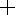

TUI:Guiding
Guiding is controlled by windows in the Guide menu. Available guiders include:
In addition a Guide Monitor window shows strip charts of FWHM, focus, guide correction and guide star brightness. Note that guide star brightness will jump if you choose a new guide star.
Most of these guiders are similar and the common elements are described below. However, the Agile Guider is very different; see its manual page for information.
Please read the Guiding User's Guide to familiarize yourself with the basics. In addition, the guide windows have some convenient shortcuts that may not be obvious.
In addition the Guide menu includes two strip chart monitors:
- Guide Monitor: shows azimuth and altitude guide offsets applied to the telescope
- Seeing Monitor: shows guide star FWHM and brightness, plus secondary focus piston and user-commanded focus offset.
Setup
Before attempting to guide, please do the following:
- Make sure a Save To directory is set in Preferences (in the Exposures panel). This is necessary for guide images to be downloaded and displayed.
- Buy a 3-button mouse (if you don't already have one). They are cheap and useful. The guide window makes heavy use of the middle and right buttons.
Download
New guide images are automtically downloaded whenever the appropriate guide window is open. If the Current/Hold button says Current then these newly downloaded files are automatically displayed.
Only the most recent 100 images are saved, and those are deleted when you quit TUI. However, guide images may be left on your disk if TUI is killed or quits unexpectedly. Please check your Save To directory once in awhile to make sure guide images are not accumulating.
The Guide Window
This section describes the elements of the guide window.
Row 1: History Controls
Allows you to select an image from the image history or from disk.
- Left and Right Arrows allow you to see previous images.
- Note: if the next or previous image is out of sequence then the appropriate arrow will be hollow. This will happen if you use the Choose... button to view an image that is not in the history. It will also happen if the history is trimmed while you are viewing an image very near the beginning of the history.
- Current/Hold toggle button allows you to hold the current image or automatically display new images as they come in.
- Warning: most guide controls are disabled unless you are in Current mode!
- Hold is set automatically if you use the history arrows or Choose... button. This is so a new guide image won't overwrite your display.
- When you are done looking at old images, toggle it back to Current. This will update your display to the current image and keep it updated, and will re-enable the guide controls.
- Name field shows the name of the displayed image. You may copy this text but not change it.
- Choose... button allows you to view any FITS file.
- If you select one that is already in the history, you jump there. Otherwise you create a new history entry and the image will be shown as out of sequence (as indicated by hollow left and right arrows).
Row 2: Image Controls
Controls image appearance: intensity scaling, zoom, etc.
- Scaling Function menu sets the image scaling function. Your choices range from Linear to very nonlinear.
- Data Range menu adjusts the range of intensities displayed. 99% means that the central 99% of scaled intensity values are shown in the available shades of gray. All dimmer value are black and all brighter values are white. You can fine-tune the data range by varying the black and white levels.
-  Select Mode (the default mode):
- Select A Star: Click the center of centroided star (one with a circle about it) to select that star. Click away from the center of any circle to select nothing. On a slitviewer you can select a star and press Center Sel to center that star on the boresight.
- Manually Centroid: Click and drag about a star to centroid and select that star. The biggest circle that fits in your box is used to compute the centroid, and the circle is shifted to be centered on the star. Please don't skimp on the size of the centroid circle, especially if near a slit or other masked out region. On the other hand, you should not include neighboring stars in the circle. To try a different centroiding circle and/or a different star, simply click-and-drag again. To cancel the mode drag off the image before releasing the button.
- Control-Click to Select: Control-Click to manually select any point on the image. On a slitviewer you may then press the Center Sel button to move that point to the boresight.
- Typically you leave the "plus" icon selected and temporarily choose the next two modes by clicking the middle or right mouse button. But you may permanently change modes by clicking an icon.
- Contrast Mode (the middle mouse button temporarily selects this mode):
- Click or click and drag to adjust the black and white levels. The left/right position of the mouse controls the black level and the up/down position controls the white level.
- Double-click to restore the default levels. This is a fine adjustment beyond that provided by the data range menu.
- Zoom Mode (the right mouse button temporarily selects this mode):
- Click and drag to zoom. Drag from the upper left to the lower right to zoom in on the region you select. Drag in the opposite direction to zoom out (more for a smaller box).
- Double-click to "zoom to fit", so that the entire image is visible.
- Zoom factor shows the current zoom factor. You may manually set a zoom factor by typing the value and <return>.
- Sat button controls whether saturated pixels are highlighted (in red).
- Mask button controls whether masked (bad) pixels are highlighted (in pale green).
Row 3: Image Pane
The middle area shows the annotated guide image. Annotations include color highlights showing saturated and masked pixels (see Sat button and Mask button above) and:
- Circle: centroid. The radius of the circle is the radius of the data used to perform the centroid. Green circles show results from "findstars", a magenta circle shows the guide star, and a blue circle shows a manually centroided star.
- X: selected star. Its color matches the color of the centroid circle.
- +: boresight position (only seen on slitviewer images)
Row 4: Data Pane
Data about the image at the current cursor and the selected star (if any).
Row 5: Acquisition Controls
Exposure time, bin factor, guide mode, etc. are all controlled here. If you change a value then the control's background goes pink to indicate the value has been modified. The guide loop will use the new values if you press Apply (at the bottom) or used for one exposure if you press Expose. To restore the values to their current defaults, press Current button.
- Exp Time exposure time, in seconds.
- Bin bin factor
- Thresh threshold for finding stars. A pixel is considered to contain signal if its value is at least thresh σ above the median. If you change Thresh and type <return> a new find stars is performed. Thresh only applies to finding stars, not to manually centroiding.
- Rad Mult radius multiplier for finding stars. After the threshold is applied (above) the star finder is left with connected blobs of pixels that are thresh sigma above the median. Each blob of light is then centroided using a centroid radius equal to the blob radius times the radius multipler. If you change Rad Mult and type <return> or press Apply then a new find stars is performed. Rad Mult only applies to finding stars, not to guiding or manual centroiding.
- Mode guide mode:
- Boresight (slitviewers only): guide on your object at the boresight. For this to work, your object must already be quite near the boresight. To start boresight guiding, first get your near the boresight. Then, if it was not found by the star finder, manually centroid it. Then start guiding. Note: if you can't get the guider to find or centroid your object then boresight guiding is not likely to work.
- Field Star: guide on a field star. You must select a star before guiding in this mode. The star will basically be left where it is (but not if the field of view rotates).
- Manual: no automatic guiding. Images are repeatedly taken. If this is a slitviewer then you can correct pointing using control-click (or the nudger).
Notes:
- The guider will drop into manual mode if your guide star cannot be found too many times in a row. You will hear a sound cue and you will see that no star is marked as a guide star any longer.
- Which mode to pick? To guide on your science object using a slitviewer, use Boresight mode. To guide on any star other than your science object, use Field Star. To simply monitor the slit or wait for conditions to improve such that guide stars are visible, use Manual mode.
- You may change modes whenever you like. Simply pick a new mode and (if Field Star mode) pick a star. Then click Apply. Just do it quickly enough that a new guide image doesn't come in first.
Row 6: Device-Specific Controls
This row (if present) contains controls specific to the current guide camera. See the TUI documentation specific to that guide camera for more information.
Row 7: Guiding Status
The row just above the status bar shows the current state of guiding.
Row 8: Status Bar
The status bar shows help for whatever control is under the mouse and also shows the state of the current or most recent command.
Last Row: Guiding Controls
- Expose take a new exposure and search for stars.
- Guide start guiding. Before you do this:
- Center your object reasonably well, e.g. by using control-click.
- Make sure you like the centroid on your object. Adjust exposure time and other settings as needed. If you cannot get a good centroid with your object down the slit, please don't try to guide on it.
- Apply apply changes to the guiding loop, e.g. a new exposure time or guide mode or guide star.
- Stop Guiding stop guiding.
- Cancel cancel the current command and enable the button(s) again.
- DS9 display the current image in the ds9 image viewer (if available).